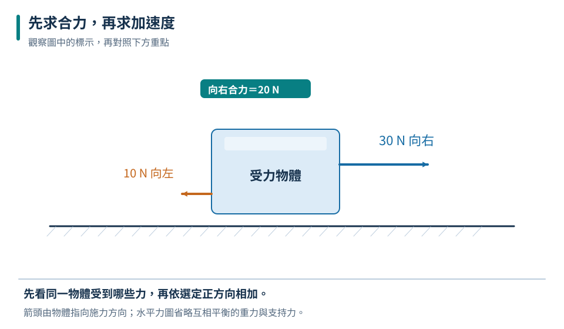
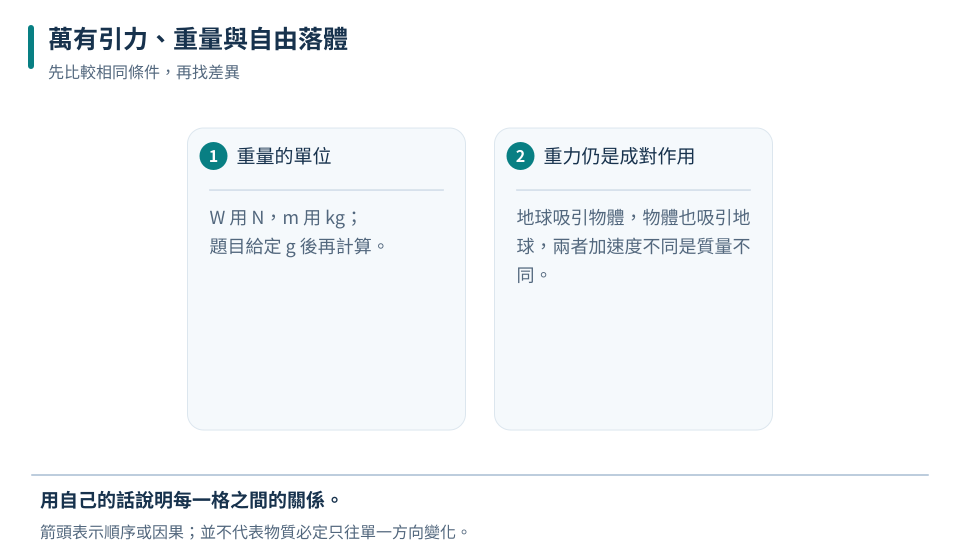

合力為零
可以靜止，也可以非零速度做等速直線運動。
九上 · 理化 · 第 2 章
推車為什麼會加速？車子煞車時人為什麼向前傾？兩個人互推，為什麼輕的人常退得比較快？本章把受力圖與運動資料連起來，建立牛頓三大運動定律，最後用萬有引力理解重量、自由落體與衛星繞行。
先備概念：能分辨速度與加速度、會求同一直線上各力的合力、知道質量和力的單位
LEARN & EXPLAIN
在本課採用的地面近似慣性參考系中，物體若合力為零，會保持靜止或等速直線運動。這是牛頓第一運動定律。日常推車放手後常會停下，是摩擦和空氣阻力在改變車的速度；不能因此推論維持運動一定要持續有向前合力。
慣性是物體保持原來運動狀態的性質，質量越大，越不容易用相同的力改變它的速度。公車突然煞車時，乘客身體傾向繼續原本的向前運動；安全帶對身體施力，讓身體隨車減速。慣性不是額外向前推人的一種力。
可以靜止，也可以非零速度做等速直線運動。
慣性大小由質量描述，不由瞬間速率決定。
相同的合力條件，可以對應不同的原有速度。
摩擦力為向左 10 N。
運動方向不等於合力方向；物體向右運動時，合力可能向左、向右或為零。
LEARN & EXPLAIN
合力不為零時，物體會產生加速度。對質量不變的物體，牛頓第二定律為 F合＝ma，力的單位用 N、質量用 kg，加速度用 m/s²。加速度方向與合力同向，卻未必與速度同向；若合力反向於速度，物體會先減速。
處理題目時先畫研究物體的受力圖，將同一直線上的各力依方向相加，再除以質量。只把推力除以質量，可能漏掉摩擦力。實驗中固定質量改變合力，可測出加速度與合力的關係；固定合力改變質量，則可研究慣性造成的差異。
推力、摩擦力等所有相關方向上的力都要納入。
質量固定，加速度與合力成正比；合力固定，加速度與質量成反比。

只分析水平運動，垂直方向重力與支持力互相平衡。
加速度為向右 3 m/s²。
F＝ma 的 F 是合力，不一定等於題目寫出的單一外力。
LEARN & EXPLAIN
當甲對乙施力，乙也同時對甲施加大小相等、方向相反的力，兩力屬於同一種交互作用，分別作用在不同物體上。這是牛頓第三定律。推牆時手會感到壓迫，就是牆同時推手；火箭把燃氣向後噴，燃氣便向前推火箭。
作用力與反作用力不會在同一個物體的受力圖內互相抵消，因為受力對象不同。桌上書本的重力與支持力雖然可能等大反向，卻不是一對作用反作用力：重力的配對是書吸引地球，支持力的配對是書向下壓桌。兩人互推時力相同，但質量不同會造成不同加速度。
把「甲對乙的某種力」交換主客體，得到「乙對甲的同種力」。
同樣大小的力作用於不同質量，造成的加速度可不同。
每一對的兩力分別作用於兩個物體；不要只看箭頭大小和方向。
甲 3 m/s²、乙 2 m/s²，方向相反。
力較小的一方不會因比較弱就只受到較小的反作用力；同一交互作用的兩力始終等大。
LEARN & EXPLAIN
有質量的物體之間存在萬有引力。質量越大、中心距離越近，吸引作用通常越大。地球對物體的引力在地表附近表現為重力；重量 W＝mg，g 是當地重力加速度。地球與月球的 g 不同，因此同一物體重量會變，質量與慣性則不因搬運而改變。
忽略空氣阻力時，不同質量物體在同一地點自由下落的加速度相同：較重的物體受重力較大，但質量也相同比例增加。人造衛星在轨道上仍受地球引力，其速度方向持續改變；軌道運動不是因為已經沒有重力。軌道中的失重感來自人與設備一起自由落下。
W 用 N，m 用 kg；題目給定 g 後再計算。
地球吸引物體，物體也吸引地球，兩者加速度不同是質量不同。
| 地點 | 題設 g（m/s²） | 質量（kg） | 重量（N） |
|---|---|---|---|
| 地球 | 10 | 5 | 50 |
| 月球 | 1.6 | 5 | 8 |

本表使用指定近似值，不把重量變小誤當成質量消失。
地球重 120 N；月球質量 12 kg、重 19.2 N。
衛星處在太空仍受引力。失重讀值不等於所有引力消失。
TRY, OBSERVE, EXPLAIN
REVIEW
可以靜止，也可以非零速度做等速直線運動。
回到這一節複習推力、摩擦力等所有相關方向上的力都要納入。
回到這一節複習把「甲對乙的某種力」交換主客體，得到「乙對甲的同種力」。
回到這一節複習W 用 N，m 用 kg；題目給定 g 後再計算。
回到這一節複習CHAPTER TEST
先獨立作答，再看解析。中難與難為編者估計，尚未經學生實測校準。